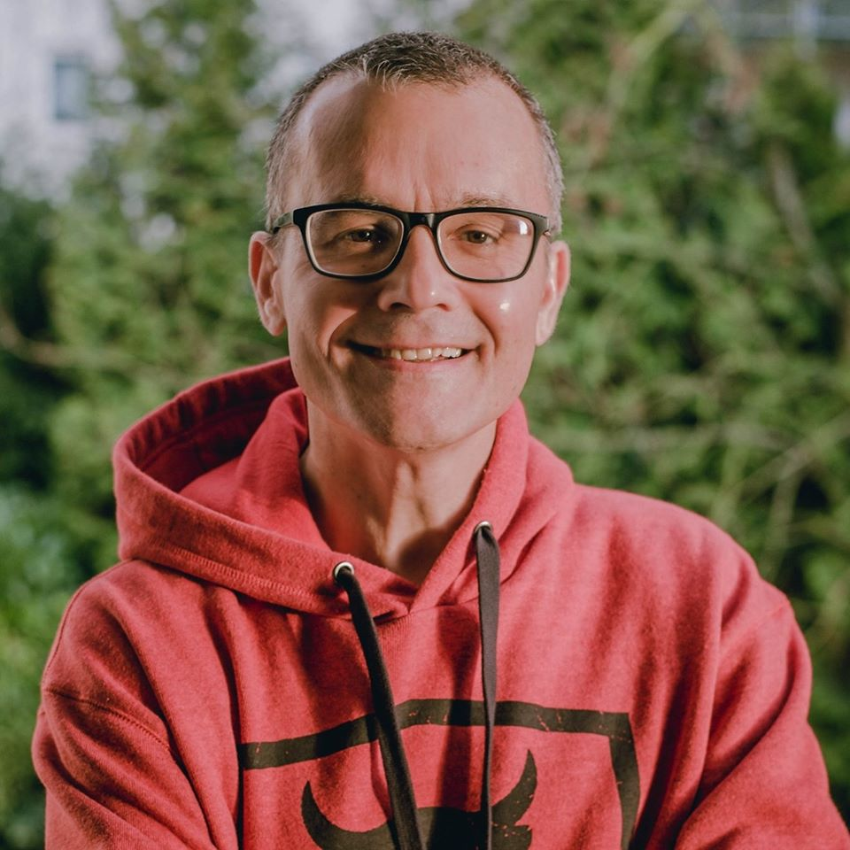

Mein Name ist Nils-Holger Nägele. Ich bin am 13 Juli 1971 in Manila, Philippinen geboren. Evangelisch(tolerant), Ledig(keine Kinder), heterosexuell, Asket(moderat), Grün(Umweltschutz finde ich gut), CDU/CSU(politisch), resolut Antikriminell, Futurist. Frei wie ein Adler. Ich schätze meine Freiheit. Die Freiheit ist die Freiheit der Andersdenkenden.
Als Kind wurde ich im Kindergarten mit Master Nils-Holger angeredet. Etwas pompös für ein Kind. ;-)
Ich habe auf den Philippinen, Manila, 5 Jahre, USA, Washington DC, 10 Jahre, Elfenbeinküste, Abidjan, 3 Jahre, Mexiko, Guadalajara, 3 Jahre, Frankreich, Aix-en-Provence, Marseille, Nice, Paris, Lille, 15 Jahre, Schweiz, Basel, 1 Jahr gelebt.
Ich bin kosmopolit, ein Weltenbürger und fühle mich überall zuhause. Das Leben ist eine Reise und ich habe noch viel vor. ;-)
An der Universität haben mich meine Professoren einen Hybriden genannt. Da ich ein glatter 1 Student war und den Bachelors mit einem Valedictorian und Summa Cum Laude Lob erzielt habe, den Masters mit Honors, haben die mir empfohlen einen PHD anzustreben. Ich bin dem Rat nicht gefolgt aus beruflichen Gründen.
In Südfrankreich war ich als Unternehmer tätig, ich habe 2 Startups gegründet, 11 Jahre, und dabei meine Leidenschaft für die Software Entwicklung entdeckt.
Ich bin in Deutschland seit 8 Jahren und habe auf hochfliegenden IT Projekten in Karlsruhe, Freiburg, Frankfurt, Koblenz, Bonn, Köln, Hamburg und Berlin gearbeitet.
Ich mag Norddeutschland, ehemals Preußen gerne. Berlin, Bremen, Hamburg sind meine Städte. In der Tat habe ich als Kind alle meine Sommer- und Winter- ferien in Niedersachsen verbracht. Berlin hat es mir besonders angetan. In den 80'zigern habe ich als Schüler auf die Mauer gesprüht: 'Die Mauer muss weg!'. Ja, Berlin, die Hauptstadt vom wiedervereinten Deutschland. Berlin ist riesig, liberal, multikulturell, offen, tolerant, dynamisch, innovativ, progressiv, viel Software. Es gibt in Berlin noch viel Raum zum Wachstum...
Jetzt haben wir die Freiheit und Einheit Deutschlands vollendet. Das war mir und hoffentlich allen sehr wichtig. Wachstum und blühende Landschaften in ganz Deutschland. Ja, Deutschland ist ein besonderes Land und hat viele Dichter und Denker, sowie Richter und Henker hervorgebracht. ;-) Mein Land hatte auch mal vor die Welt zu erobern. Der damalige Zeitgeist: 'Heute sind wir Deutschland und morgen die ganze Welt!' ;-)
Marathonlauf war mein Sport. Ich habe an den Marathon Wettkämpfen in Paris, Karlsruhe(2 Mal), Freiburg, Frankfurt(Bestzeit 2012 in 3:01:50), Köln, Bremen, Marseille, Berlin(2 Mal) teilgenommen. Marathon Berlin 2014 war mein letzter Wettkampf. Ich habe es übertrieben, getrieben von immer weiter, höher, schneller, habe ich immer weitertrainiert, Wettkämpfe dicht hintereinander, 2 Tage nach dem Wettkampf mit dem Training wieder angefangen. Ich habe nicht auf meinen Körper gehört und bin seit Marathon Berlin 2014 in Verletzungspause. Marathon Berlin hat mein Herz gebrochen. Mein Tip an alle ambitionierten Sportler, hört und folgt den Profis, deren Trainingspläne. Hört auf Eure Körper. Bei höllischem Schmerz, anhalten und Pause machen. Wir Menschen sind keine Maschinen.
Ich bin typisch deutsch. Mein Vater ist Schwabe. Meine Mutter ostelbischer Landadel. Meine Schwester ist französin und wohnt in Sydney, Australien. Meine drei Neffen sind Australier.
Mein Vater hat hat meine Mutter am Flughafen in Antananarivo, Madagaskar kennengelernt. 3 Wochen spätere Ihr einen Heiratsantrag gemacht. Er hat Sie dann wenig Zeit danach in Versmold, Nordrhein-Westfalen Deutschland geheiratet.
Meine Mutter ist mit mir hochschwanger, im achten Monat von Grenoble, Frankreich nach Manila, Philippinen mit Air France geflogen. Sie hatte mit Ihren Freundinnen eine Wette abgeschlossen, wenn ich im Flugzeug zur Welt gekommen wäre, hätte Sie mich Air France genannt. Ich hätte lieber Lufthansa oder Swiss Air als Vornamen bevorzugt. ;-)
Die Schwaben sagen gerne: 'Mir Schwabe werde mit 40 gescheit, die Andere nit in aller Ewigkeit.'
Da ich nur ein halber Schwabe bin, werde ich erst mit 80 Jahren gescheit. ;-)
Mein Vater hat mir als Kind immer gesagt: 'Deutschland ist schön von 10000 KM Entfernung.' Ich denke heute: 'Nein'. Deutschland is überall schön. Es ist das Jahr 2020, Deutschland hat sich weiterentwickelt. Deutschland ist ein Rechtsstaat. Eine freiheitliche Demokratie. Wir haben ein Grundgesetz, eine Verfassung.
Ich bin im Ausland immer als Botschafter meines Landes in Erscheinung getreten und habe mich und mein Land würdevoll vertreten. So dass die Menschen einen positiven Eindruck von meinem Land bekommen haben. Das war mir wichtig.
Momentan bin ich in Bremen aus familiären Gründen und arbeite auf einem Projekt in einer lokalen Softwareschmiede.
Ich bin ein leidenschaftlicher Frontend Ingenieur. Ich bin am Frontend interessiert und helfe auch wenn die Hütte brennt im Backend, agile Software Entwicklung. Sprachen die ich mag sind HTML, CSS, Javascript, Typescript, C#, Java, C++, Plattdeutsch, und Schwäbisch. Vorsichtig das Letztere braucht ein lebenlang zu meistern. Ja, das Angular Framework schätze ich auch.
Auf diesem Blog werde ich Code schreiben, den ich mag und über alles teilen was mir wichtig ist.
Offener Quellcode, Open Source ist eine wunderbare Sache, meine Welt. Wissen ist wie Liebe, desto mehr man gibt desto mehr bekommt man zurück. Open Source ist die Zukunft der Menschheit. Öffne Deinen Kimono. Weltweit arbeiten Software Ingenieure, Organisationen zusammen, um eine bessere Zukunft für die kommenden Generationen zu gestalten. Wissensaustausch, Wissensvermehrung, Weiterentwicklung des Individuums und der Menschheit. In der Zukunft wird Software alle Prozesse steuern. Alles wird automatisiert...
Während Du ruhst, trainiert ein anderer. Wenn Du auf ihn triffst wird er Dich besiegen. Der Wille zu siegen ist nichts ohne den Willen sich vorzubereiten. Ich habe meinen Helden gefunden, der bin ich. Ich bin zufrieden und glücklich mit meinem Leben. Ich lebe meinen Traum. Danke an alle Menschen die mir auf meinem Lebensweg geholfen haben, und denen ich helfen durfte.